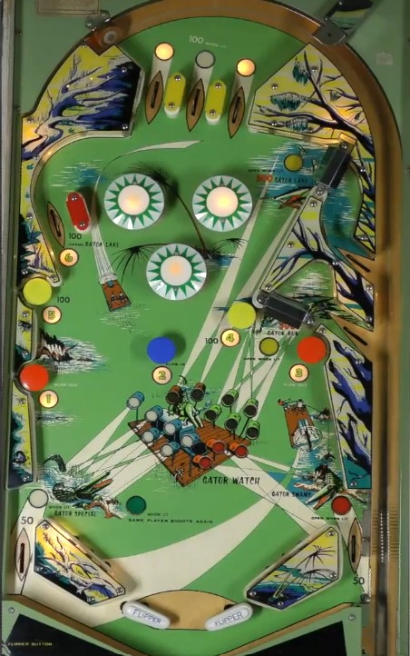

Sheba is the original 2-player version. Campus Queen is the original 4-player version, with different artwork and theming. Gator is a 1969 re-release of Campus Queen with zipper flippers and updated scoring. Alligator is identical to Gator, just with its name changed for release in Germany.
Gator/Alligator is not to be confused with Nip-It (1973), another Bally EM game prominently featuring alligators.
On Gator and Alligator, hit the blue #2 mushroom bumper in the center of the playfield to zip the flippers together whenever they are open, as your top priority. Sheba and Campus Queen do not have these zipper flippers. On all 4 games, qualify and use the gates on the right side of the game as much as possible by collecting numbers from mushroom bumpers or the upper left lane: 1-2-3 lights the right out lane gate, 1-2-3-4-5 lights the middle right gate, and 4-5 or 6 lights the top gate. Making any gate resets the numbers to be collected again.
The below picture is of Gator, which was taken from this video by PAPApinball.
At any given time, either the center top lane is lit, or the two outer top lanes are lit. Top lanes score 10 points when not lit, or 50 points (Sheba) or 100 points (Campus Queen/Gator/Alligator) when lit. Which top lanes are lit alternates every time a 50-point switch is scored on Sheba/Campus Queen, or every time any gate is used on Gator/Alligator.
On Sheba, pop bumpers and slingshots score 1 point, or 10 when lit. Any 1-point switch hit changes which bumper(s) and slingshot(s) are lit, if any. A dynamic difficulty mechanism determines how frequently the pop bumpers and slingshots are lit. The dynamic difficulty increases any time a free game is won and decreases each time a new game is started. The higher the dynamic difficulty is, the less frequently the pop bumpers and slingshots will be lit.
On Gator/Alligator, all pop bumpers and slingshots always score 10 points.
On Campus Queen, the pop bumpers use a dynamic difficulty mechanism as described for Sheba, but the slingshots always score 10 points.
There are 5 mushroom bumpers in the middle third of the playfield numbered 1 through 5, and a lane labelled 6 in the upper left. Hitting a lit feature collects that number. Collecting certain combinations of numbers lights the gates along the left side of the playfield.
On Sheba, all of the 1-6 number targets score 50 points when lit or 10 points when not lit.
On Campus Queen, all of the 1-6 number targets always score 50 points.
On Gator/Alligator, the 1-2-3 bumpers always score 10 points, and the 4-5 bumpers and 6 lane always score 100 points. In addition, the blue #2 mushroom bumper zips the flippers together, and the red #1 and #3 mushroom bumpers unzip the flippers. Zipping the flippers together is always top priority at any time.
Sheba/Campus Queen has 1-point rollover buttons near the slingshots. Gator/Alligator has no equivalent.
There is no end of ball bonus. On Sheba, tilt ends game, but only for the player who tilted. On Campus Queen/Gator/Alligator, tilt ends the current ball in play only.